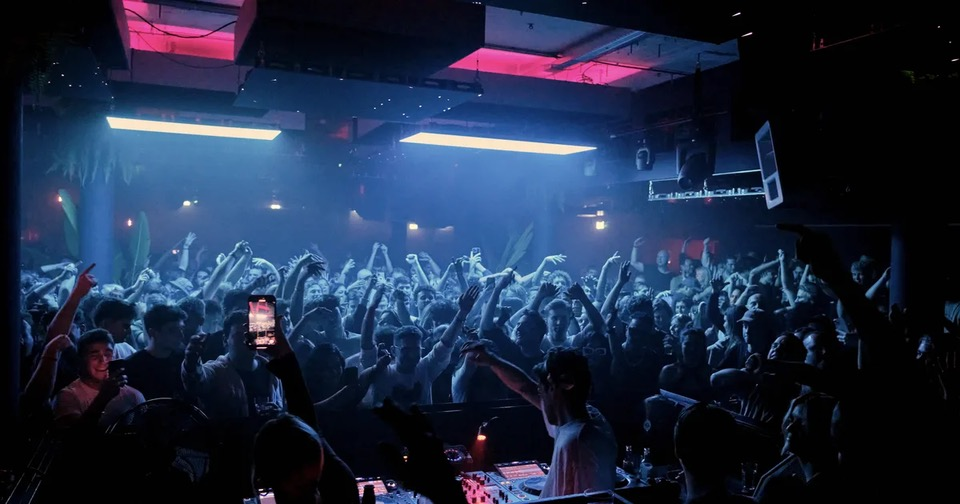
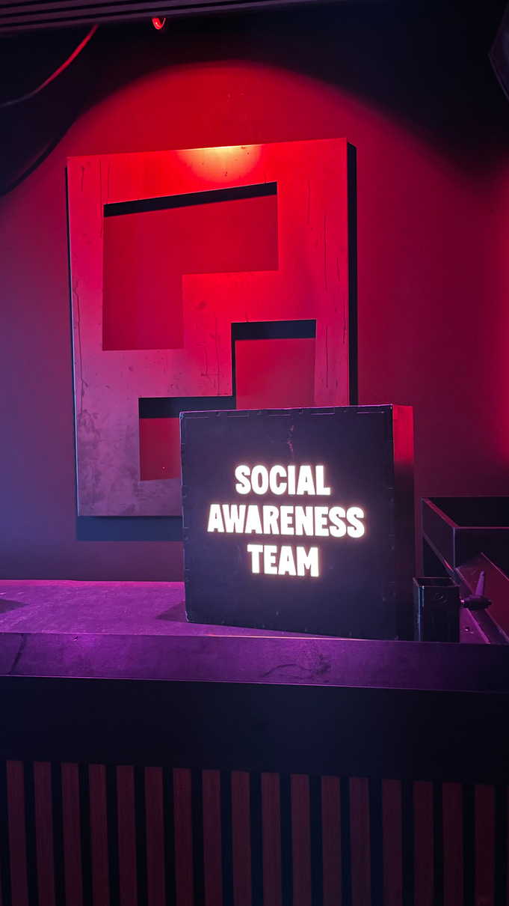
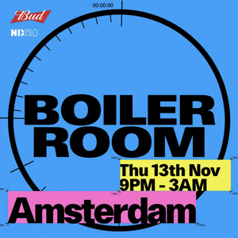

Case study / 2025
Boiler Room
Amsterdam
Project overview
Managed the Social Awareness component after a direct client request, taking ownership of planning, people and delivery.
01
International event
2025
Amsterdam
My role
Ownership from brief to delivery.
- Client communication
- Proposal development
- Project planning
- Crew coordination
- Team briefings
- Delivery and aftercare
Project context
The work was client-requested and independently managed. I translated requirements into operational actions while keeping the Social Awareness crew and production aligned.
Experience
A defining opportunity to manage a live-event project independently and work directly with a client under real-time conditions.
Gallery
Social awareness
in practice.


